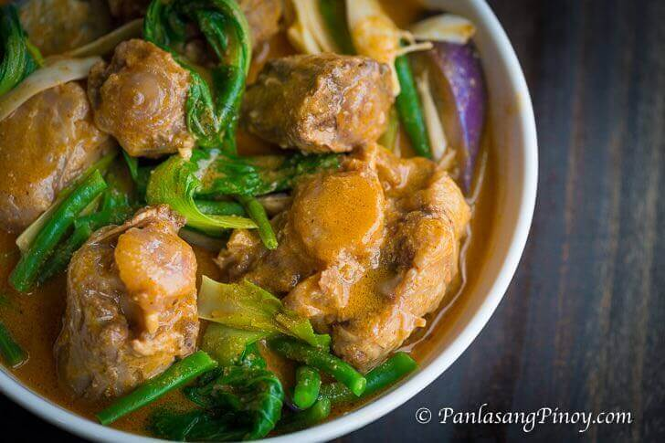

Kare Kare is a Filipino stew of oxtail and vegetables in a thick peanut sauce. The sauce is salty, slightly sweet, and nutty. On its own it tastes mild, almost under-seasoned. That is intentional. The bagoong alamang on the side does the rest of the seasoning once you mix it with the kare kare on rice.
Kare Kare has been around in Filipino cooking for a long time. The name likely comes from 'kari,' an older word for sauce. Over time, peanuts, annatto, and bagoong became the standard ingredients. The long simmer is what makes it a weekend or holiday dish in most homes. Birthdays, fiestas, Noche Buena are when you usually see it on the table.